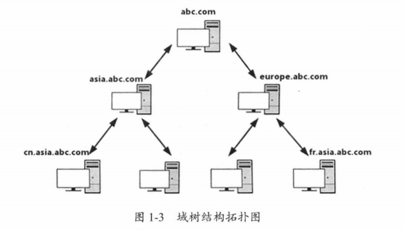
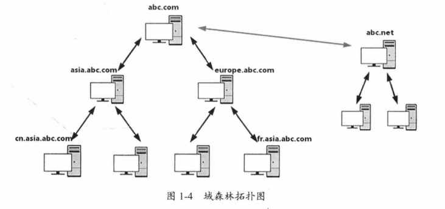
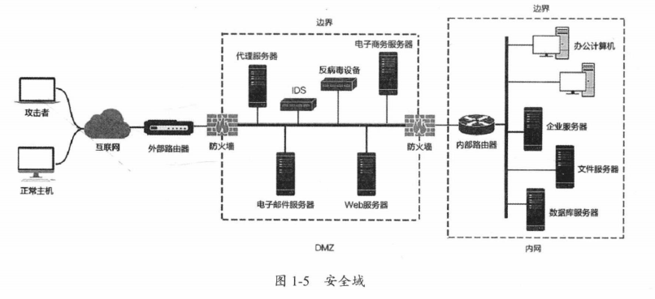

1-内网渗透测试基础
内网基础知识
工作组
可自由加入或退出的群组，方便同组计算机相互访问和共享资源，类似于简单分组，并没有集中管理的作用。工作组内所有的计算机都是平等的，没有服务器和客户机的区别。
域
域是一个有安全边境的计算机集合，即一个域内的计算机无法访问另一个域中的资源。域相当于是升级版的工作组，有更加严格的安全控制机制。域内资源的访问取决于是否以合法身份登录到域以及用户在域内的身份。
域控制器是域内的一台类似管理服务器的计算机，相当于一个域的“门禁”。域控制器负责验证审核所有用户的请求。域控制器包含域内的账户、密码、属于域的计算机等信息构成的数据库，以供进行验证。当计算机连接到域时，域控制器首先鉴别计算机是否属于这个域，然后鉴别用户使用的账号和密码是否存在以及是否正确匹配等，否则将拒绝用户访问域内的资源。
单域
一个小型域。通常至少应该有两台域服务器，若一台DC出现问题则可以使用备份DC以保证域的正常使用。
父域和子域
若为了某些需求在网络中划分了多个域，第一个域被称为父域，各分部的域称为该域的子域。
在同一个域内的信息交互条目较多且不会进行压缩，而不同域之间的信息交互条目较少，且可以进行压缩。通过划分域可以让各部门自治自己部门的网络，且减少整个网络的通信压力。
划分域也可能是出于安全考虑，因为不同的域可以设定不同的安全策略。
域树
多个域之间通过建立信任关系组成的集合。
域管理员只能管理自己的域，不能访问或者管理其他域。而通过建立信任关系而形成的域树内的域之间可以相互访问和管理。图中上一层为下一层的父域。

域森林
域森林是多个域树之间建立信任关系组成的集合。

域名服务器
用于实现域名与IP地址相互转换的服务器。
实际上，由于域内的计算机是使用DNS来定位域控制器、服务器和其他计算机和服务的，所以域的名字就是DNS域的名字。
在内网渗透测试中，大多是通过寻找DNS服务器来确定域控制器的位置的，因为DNS服务器和域控制器通常配置在同一台机器上。
活动目录
活动目录是指域环境中提供目录服务的组件。
目录存储了有关网络对象的信息（如用户、组、计算机、资源、打印机和联系人等）。如果说内网中的资源是字典的内容，那么活动目录就是字典的索引，用以快速准确地为用户找到其所需要的服务。
域树内的所有域共享同一个活动目录，这个活动目录内的数据分散存储在各个域之中，且每个域只存储该域内的数据。
活动目录主要提供以下功能：
- 账号集中管理：所有账号存储在服务器中以便执行命令和重置密码等。
- 软件集中管理：统一推送软件、安装网络打印机等。
- 环境集中管理：统一桌面、协议设置等。
- 增强安全性：统一进行杀毒、集中管理权限、监控网络、管理资料等。
- 更可靠，更短的宕机时间：利用负载均衡等技术进行容灾设置等。
活动目录是微软提供的统一管理基础平台，ISA、Exchange、SMS等都依赖这个平台。
域控制器和活动目录的区别
活动目录数据库简称AD库，如果内网中的一台计算机上安装了AD，那么这台计算机就变成了DC（域控制器）。
安全域的划分
划分安全域的目的是将一组安全等级相同的计算机划入同一个网段。在这些计算机相同的网络边界上部署防火墙来实现对其他安全域的网络访问控制策略。

一般可以将网络划分为三个区域：安全级别最高的内网、安全级别中等的DMZ（隔离区）、安全级别最低的外网。
DMZ是为了解决安装防火墙后外部网络不能访问内部网络服务器的问题而设立的一个非安全系统与安全系统之间的缓冲区，可以放置一些必须公开的服务器设施，例如Web服务器、FTP服务器和论坛服务器等。一般DMZ的访问控制策略定义如下：
- 内网可以访问外网：防火墙需要执行NAT。
- 内网可以访问DMZ：内网用户可以使用或管理DMZ中的服务器。
- 外网不能访问内网：防火墙的基本策略。内网一般是不允许外网用户访问的，若要在外网访问必须使用VPN。
- 外网可以访问DMZ：需要由防火墙来完成对从对外地址到服务器实际地址的转换。
- DMZ不能访问内网：当攻击者攻陷DMZ时，内网也无法被访问到。
- DMZ不能访问外网：此策略有例外，例如若DMZ中有邮件服务器就要允许访问外网，否则邮件服务器无法正常工作。
- 内网办公区：一般能够访问DMZ，部分管理者还可以访问核心数据区。在安全管理上可能存在在很多漏洞，是攻击者进入内网的重要途径之一。
- 核心区：存储最重要的数据，需要通过日志记录、安全审计等安全措施进行严密的保护，往往只有很少主机能够访问。攻击者在横向移动时要优先查找运维人员、主管等用户的信息，因为他们一般拥有进入核心区的权限。
域中计算机的分类
域控制器
在网络中可以有多台计算机被配置成为域控制器，以分担验证用户操作的任务量。多个域控制器可以一起工作，可以提高网络的安全性和稳定性
成员服务器
安装了服务操作系统并且加入了域，但没有安装活动目录的计算机。主要任务是提供网络资源。
成员服务器的类型通常有文件服务器、应用服务器、数据库服务器、Web服务器、邮件服务器、防火墙、远程访问服务器、打印服务器等。
客户机
用户利用这些计算机和域中的账户就可以登陆域，用来访问网络中的各种资源。
独立服务器
独立服务器和域没有关系。独立服务器既不加入域，也不安装活动目录。
独立服务器可以创建工作组、与网络中的其他计算机共享资源，但不能使用活动目录提供的任何服务。
域内权限
组是用户账号的集合，包括域本地组、全局组、通用组，可以大大简化网络维护和管理工作。
- 域本地组：主要用于授予本域内资源的访问权限，不能嵌套在其他组中。
- 全局组：全剧组和域本地组的关系与域用户帐号和本地帐号的关系类似，域用户帐号可以在全局使用，而本地帐号只能在本机中使用。比如把账号A加入域本地组Administrator，则A可对本机内其他用户的权限进行操作，但是不能操作域中其他计算机的用户权限进行操作；而如果把A加入全局组Domain Admins中，用户A则可以操作域内所有计算机的权限。
- 通用组：可在森林中的任何域中指派权限，可以嵌套在其他组中。
记忆方式：域本地组来自全林，作用于本域；全局组来自本域，作用于全林；通用组来自全林，作用于全林。
几个比较重要的域本地组权限：
- 管理员组（Administrators）：权力最大，默认在活动目录和域控制器中具有管理权限。
- 远程登录组（Remote Desktop Users）：有远程登陆权限。
- 账号操作员组（Account Operators）：除属于Administrators组和Domain Admins组中成员的权限外，可以更改其他成员的权限，且可以在本地登录域控制器。
- 服务器操作员组（Server Operators）：可以管理域服务器，包括建立、管理、删除共享目录、格式化硬盘等。
- 备份操作员组（Backup Operators）：可以在域控制器中执行备份和还原操作，可以在本地登录和关闭域控制器。
几个重要的全员组、通用组权限：
- 域管理员组（Domain Admins）：默认会被添加到每台加入域的成员计算机的本地Administrators组中。
- 企业系统管理员组（Enterprise Admins）：在域森林中的每个域中都被添加到Administrators组中。
- 架构管理员组（Schema Admins）：可以修改活动目录和域森林的模式。
- 域用户组（Domain Users）：所有的域成员
虚拟机网络模式
桥接模式
虚拟机和主机相当于插在同一台交换机上的两台计算机。如果有DHCP服务则自动获取IP，否则需要手动配置。
NAT模式
虚拟机通过与物理机的连接访问网络。虚拟机可以访问主机所在局域网中的其他计算机，但只有主机能访问虚拟机，局域网中的其他计算机无法访问到虚拟机。
Host-only模式
最私密最严格的网络配置，虚拟机处于一个独立的网段中。虚拟机无法直接上网，但可以通过Windows提供的连接共享功能实现共享上网。虚拟机能够和主机所在局域网中的其他计算机互相访问到。
Host-only模式是渗透测试中虚拟机常用的网络模式。
主机平台及常用工具
Kali中的常用工具
WCE
Windows凭据管理器，常用于列出登录会话，以及添加、修改和删除关联凭据（例如LM Hash、NTLM Hash、明文密码、Kerberos票据等）。
minikatz
用于从内存中获取明文密码、现金票据和密钥等。
Responder
用于嗅探网络内所有的LLMNR包、获取各主机的信息、提供多种渗透场景等。
BeEF
针对浏览器的渗透测试工具。可以通过XSS漏洞，利用JavaScript代码对目标主机的浏览器进行测试。也可以配合Metasploit进一步对目标主机进行测试。
DSHashes
从NTDSXtract中获取易于理解的散列值。
PowerSploit
基于PowerShell的后渗透测试框架，包含很多PowerShell脚本。主要用于信息收集、权限提升、权限维持。
Nishang
针对PowerShell的渗透测试工具，集成了框架、脚本、各种Payload。
Empore
内网渗透测试利器，跨平台性能类似于Metasploit。
ps-encoder.py
使用Base64编码封装的PowerShell命令包，目的是混淆和压缩代码
smbexec
使用Samba工具的PsExec类工具。特征和痕迹十分明显。特点在于渗透测试时能够直接提供目标主机的System权限。
后门制造工厂（不再维护）
对PE、ELF、Mach-O等二进制文件注入Shellcode。
veil
生成绕过常见防病毒解决方案的Metasploit有效载荷。
Metasploit
一个计算机渗透测试框架，提供有关已知安全漏洞的重要信息。
Cobalt Strike
优秀的后渗透测试平台，功能强大。
Windows中的常用工具
Nmap
用于发现主机、扫描端口、识别服务、识别操作系统等。
Wireshark
网络协议和数据包解析器，可以监控整个网络的流量。
PuTTY
SSH和Telnet客户端，用于远程访问。
sqlmap
用于检测和执行应用程序中的SQL注入行为。
Burp Suite
除一般用途外，Burp Scanner可以扫描应用程序中的漏洞。
Hydra
网络登录暴力破解工具。
Getif
用于收集SNMP设备的信息。
Cain&Abel
密码和凭证恢复工具。
Windows PowerShell基础
PowerShell的特点
- Win7及以上版本默认安装
- 几乎不会触发杀毒软件
- 可以远程执行
- cmd.exe的运行通常会被阻止，而PowerShell的运行通常不会被阻止
- 可用于管理活动目录
基本概念
.ps1文件
一个PowerShell脚本其实就是一个简单的文本文件，扩展名为.ps1。每个命令显示为独立的一行。
执行策略
有如下执行策略：
- Restricted：脚本不能运行（默认设置）
- RemoteSigned：本地创建的脚本以及网上下载的拥有数字证书签名的脚本可以运行
- AllSigned：仅由受信任的发布者签名的脚本可以运行
- Unrestricted：允许所有脚本运行
为了防止恶意脚本运行，默认情况下执行策略为“不能运行”。如果PowerShell脚本无法运行，则可以使用下列命令查询当前的执行策略。
1 | Get-ExecutionPolicy |
可以使用下列命令设置执行策略
1 | Set-ExecutionPolicy <policy name> |
管道
将一个命令的输出作为另一个命令的输入，两命令之间使用|连接。例如下列命令可以停止所有以‘p’开头的程序。
1 | get-process p | stop-process |
常用参数
- -ExecutionPolicy Bypass（-Exec Bypass）：绕过执行安全策略，这个参数非常重要，默认情况下PowerShell的安全策略规定PowerShell不能运行命令和文件。
- -WindowStyle Hidden（-W Hidden）：隐藏窗口。
- -NonInteractive（-NonI）：非交互模式。PowerShell不为用户提供交互式的提示。
- -NoProfile（-NoP）：PowerShell控制台不加载当前用户的配置文件。
- -noexit：执行后不退出Shell。
- -NoLogo：启动时不显示版权标志的PowerShell。
Base64编码
目的是混淆和压缩代码，避免因为一些特殊字符被杀毒软件查杀。
1 | python ./ps_encoder.py -s raw.txt |
执行不同版本的PowerShell
在x64的机器上，有两个版本的PowerShell，且两个版本的执行策略不会相互影响。
运行32位PowerShell
1 | powershell.exe -NoP -NonI -W hidden -Exec Bypass |
运行64位PowerShell
1 | WinDir%\syswow64\windowspowershell\v1.0\powershell.exe -NoP -NonI -W hidden -Exec Bypass |